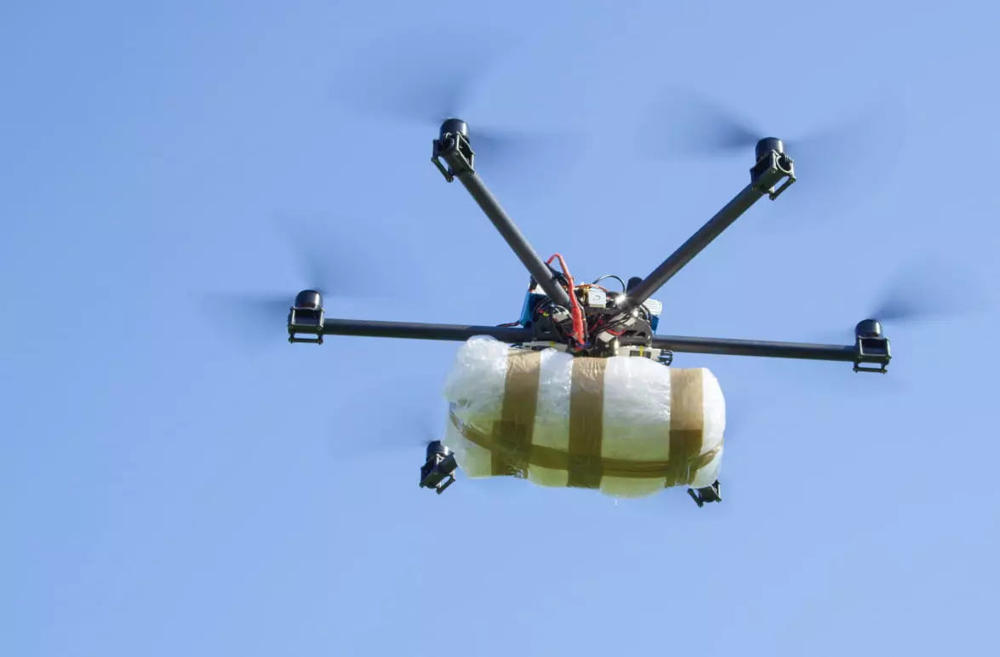

Manantiales de Chimalpa: Rescate ambiental urgente para 2025
Por Redacción Ambiental | 4 de julio de 2025
Un recurso esencial en crisis
Los manantiales de Chimalpa, fuente vital para más de 50,000 habitantes, se encuentran en una situación crítica. El cambio climático, sumado a décadas de uso desmedido, ha reducido el flujo de agua en un 40%. Esta situación no solo afecta a la población local, sino que amenaza con alterar el equilibrio ecológico de la región.
El impacto en las comunidades
Muchas familias dependen de los manantiales para sus actividades diarias. Agricultores locales han reportado pérdidas significativas en sus cultivos debido a la falta de riego, mientras que comunidades enteras enfrentan problemas de abastecimiento. La población exige medidas inmediatas que incluyan:
- Reforestación de áreas críticas.
- Proyectos de captación de agua de lluvia.
- Educación ambiental para reducir el desperdicio de agua.
Plan gubernamental: ¿Suficiente?
El gobierno ha anunciado un plan de recuperación para el próximo semestre, pero muchos lo consideran insuficiente. Organizaciones ambientalistas han propuesto una alianza público-privada para acelerar los trabajos, pero la financiación sigue siendo un desafío.
Brecha digital en aumento pese al avance de las tecnologías
Por Redacción Tecnología | 4 de julio de 2025

Desigualdad digital en cifras
En 2025, cerca del 40% de la población mundial aún no tiene acceso a internet. En regiones rurales, como partes de América Latina y África, esta cifra alcanza el 70%. Esto contrasta con las zonas urbanas, donde la digitalización está transformando vidas a un ritmo sin precedentes.
El papel de la automatización
La automatización también ha generado tensiones. Mientras las grandes empresas celebran la reducción de costos, miles de trabajadores manuales han perdido sus empleos. Expertos sugieren programas de capacitación tecnológica para evitar que estos sectores queden rezagados.
Iniciativas globales
La ONU ha lanzado una campaña para cerrar la brecha digital en 2030, con énfasis en:
- Conexión gratuita en escuelas rurales.
- Subvenciones para equipos tecnológicos en comunidades marginadas.
- Colaboración con empresas de telecomunicaciones para expandir la infraestructura.
El impacto de la biotecnología en la sociedad del 2025
Por Redacción Ciencia | 4 de julio de 2025
Avances médicos revolucionarios
La biotecnología ha logrado avances impresionantes. En medicina, tratamientos personalizados para enfermedades genéticas han reducido la mortalidad en un 30%. Además, las vacunas de nueva generación están ayudando a combatir pandemias.
Los desafíos éticos
Sin embargo, estos avances plantean dilemas éticos. ¿Deberían los gobiernos regular la manipulación genética? ¿Quién tiene acceso a estos tratamientos? La sociedad aún busca respuestas.
El futuro de la biotecnología
Se espera que la biotecnología también tenga un impacto en la agricultura, mejorando los cultivos para resistir sequías y plagas, lo que podría ayudar a resolver la crisis alimentaria en varias regiones del mundo. Pero la distribución de estos avances será clave para evitar nuevas desigualdades.
Narcotráfico recurre a drones y criptomonedas
Por Redacción Seguridad | 4 de julio de 2025
Una nueva era de crimen tecnológico
En 2025, las organizaciones delictivas han adoptado nuevas tecnologías, como drones para el transporte de drogas y criptomonedas para ocultar el dinero obtenido ilegalmente. Estas tácticas dificultan la labor de las autoridades, que deben modernizar sus métodos para contrarrestar estas nuevas amenazas.
Impacto global y respuestas gubernamentales
Los gobiernos han intensificado sus esfuerzos para desarrollar estrategias más efectivas, como el uso de inteligencia artificial y tecnología de rastreo, para interceptar las actividades ilícitas. Sin embargo, la colaboración internacional sigue siendo esencial para frenar el tráfico transnacional de drogas y la delincuencia organizada.
El desafío del futuro
A medida que las tecnologías avanzan, también lo hacen los métodos de los narcotraficantes. La comunidad internacional debe adaptarse rápidamente a estas nuevas amenazas para garantizar la seguridad global.
Noticias Internacionales: Los grandes desafíos del mundo globalizado
Por Redacción Internacional | 4 de julio de 2025
La crisis migratoria en Europa
En los últimos años, Europa ha enfrentado una crisis migratoria sin precedentes. Millones de refugiados, principalmente de África y Oriente Medio, han buscado asilo en países europeos debido a guerras, persecuciones y crisis económicas. A pesar de los esfuerzos humanitarios, muchos países aún luchan por encontrar una solución efectiva y sostenible para abordar esta crisis.
La guerra comercial entre EE.UU. y China
La guerra comercial entre Estados Unidos y China ha generado incertidumbre en la economía mundial. Las tarifas impuestas a productos clave como el acero, el aluminio y la tecnología han alterado los mercados globales. Expertos advierten que una escalada en este conflicto podría afectar la recuperación económica mundial post-pandemia.
El cambio climático y sus consecuencias globales
El cambio climático es una preocupación global que ha llevado a muchos países a tomar acciones más agresivas. Desde la desforestación en el Amazonas hasta los incendios forestales devastadores en Australia, los efectos del cambio climático ya son palpables. Organismos internacionales están colaborando para cumplir con los acuerdos del Acuerdo de París, pero los países más pobres siguen siendo los más afectados.